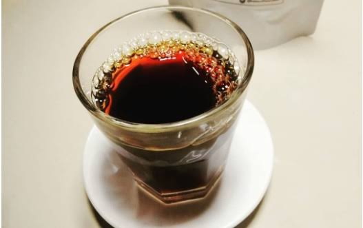
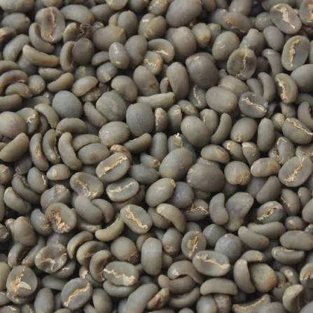
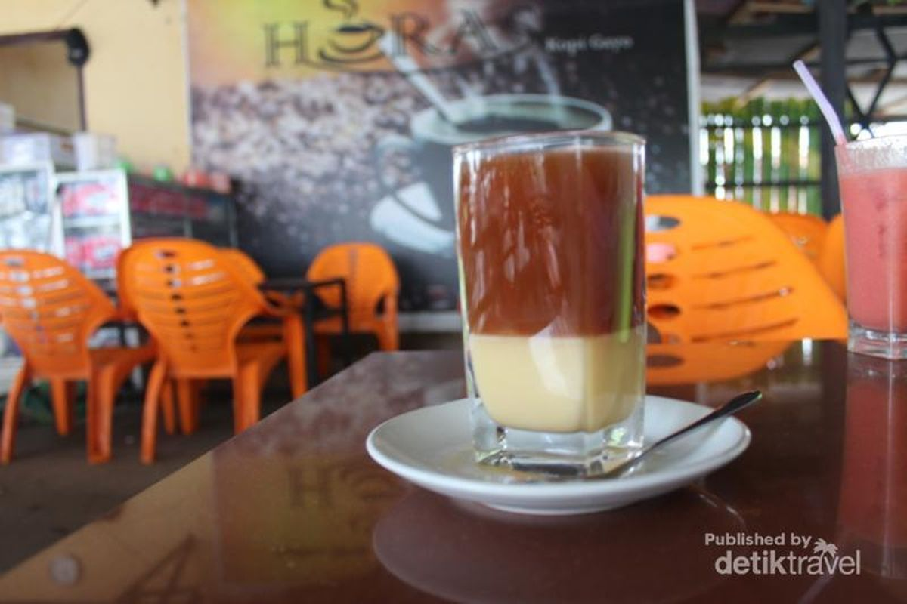
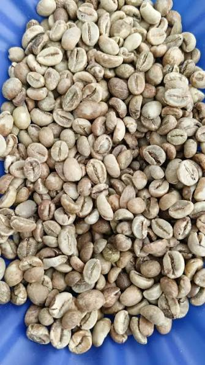
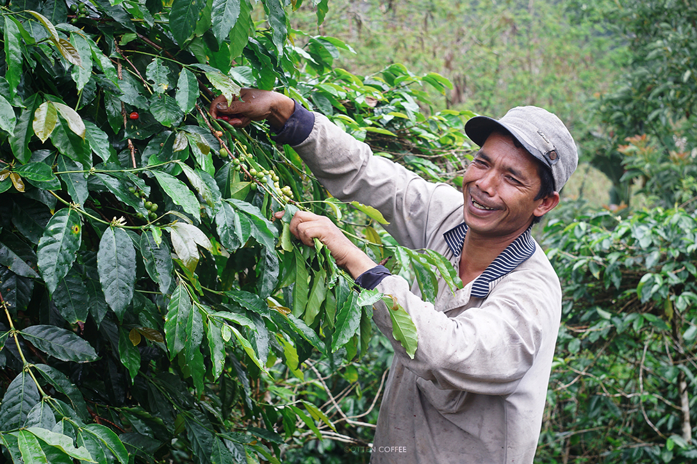
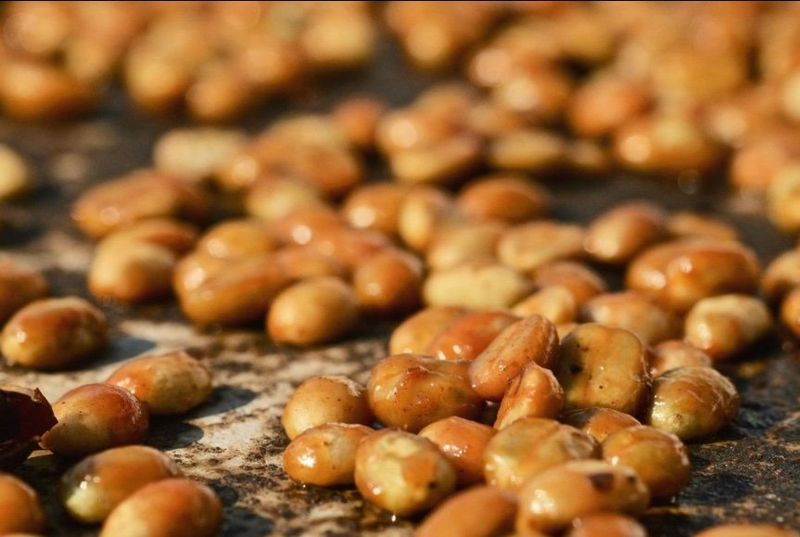

Kopi langka dengan proses fermentasi alami yang menghasilkan karakter rasa fruity seperti anggur merah — dicari oleh penikmat kopi khusus di seluruh dunia.
Wine Gayo bukan varietas tanaman, melainkan hasil dari metode pengolahan khusus yang disebut proses alami (natural process). Dalam metode ini, buah kopi utuh — lengkap dengan kulit dan daging buahnya — difermentasi dan dikeringkan secara utuh sebelum biji dipisahkan.
Nama "Wine" (anggur) diberikan karena karakter rasa yang dihasilkan mirip dengan anggur merah: fruity (beraroma buah), slightly fermented (sedikit terfermentasi), dan complex (kompleks). Ini adalah hasil dari gula alami dalam buah kopi yang difermentasi oleh ragi liar selama proses pengeringan.
Wine Gayo pertama kali dikembangkan oleh petani dan penyangrai (roaster — orang yang menyangrai biji kopi) eksperimental di Dataran Tinggi Gayo sekitar tahun 2015-an. Awalnya dianggap terlalu berisiko karena prosesnya sulit dikontrol, namun kini menjadi salah satu kopi paling dicari dalam kompetisi kopi khusus (specialty coffee).
Proses alami Wine Gayo membutuhkan kesabaran dan pengawasan ketat. Satu kesalahan kecil dapat membuat seluruh batch menjadi over-fermented (terfermentasi berlebihan) dan tidak layak minum.
Hanya buah kopi yang merah matang sempurna yang dipilih. Buah yang terlalu matang atau rusak akan menghasilkan rasa busuk. Sortasi dilakukan manual dengan tangan, satu per satu.
Buah kopi utuh (tanpa dikupas) dijemur di atas para-para (rak bambu) atau tempat tidur pengeringan khusus. Proses ini memakan waktu 3 hingga 4 minggu, tergantung cuaca. Buah harus dibalik setiap hari untuk memastikan pengeringan merata.
Selama pengeringan, gula alami dalam daging buah kopi difermentasi oleh ragi liar yang ada di udara. Fermentasi ini yang menciptakan karakter fruity dan wine-like (seperti anggur). Suhu dan kelembapan harus dijaga ketat untuk menghindari fermentasi berlebihan.
Setelah buah benar-benar kering (kadar air 11-12 persen), kulit luar, daging buah, dan kulit ari dikupas sekaligus menggunakan mesin pengupas. Biji hijau (green bean — biji kopi yang belum disangrai) yang dihasilkan memiliki warna kehijauan dengan aroma fruity yang kuat.
Biji diistirahatkan (resting) selama 4 hingga 6 minggu sebelum disangrai. Masa istirahat ini menstabilkan rasa dan memungkinkan karakter fruity berkembang dengan sempurna.
Berry & Buah Merah: Aroma stroberi, blueberry, dan raspberry yang dominan. Ini adalah hasil langsung dari fermentasi gula buah kopi yang menciptakan senyawa aroma mirip buah beri.
Anggur Merah: Karakter wine-like (seperti anggur) yang kompleks, dengan nuansa tannin (zat yang memberikan rasa sepat pada anggur) yang halus. Ini yang membuat Wine Gayo unik dan dicari.
Fermentasi Halus: Sedikit rasa terfermentasi yang menyenangkan, mirip dengan kombucha atau bir buah ringan. Tidak berlebihan, hanya cukup untuk memberikan kedalaman.
Cokelat & Karamel: Di balik karakter fruity, ada fondasi cokelat susu dan karamel yang memberikan keseimbangan dan mencegah rasa terlalu asam.
Floral (Beraroma Bunga): Beberapa batch menunjukkan aroma bunga seperti melati atau mawar, terutama saat diseduh dengan metode yang tepat.

Metode terbaik untuk menonjolkan karakter fruity dan floral. Gunakan suhu air yang sedikit lebih rendah untuk menghindari ekstraksi berlebihan yang dapat membuat rasa terlalu asam.
Sempurna untuk menekankan rasa manis alami dan mengurangi keasaman. Wine Gayo cold brew menghasilkan minuman yang menyegarkan dengan karakter fruity yang kuat.
AeroPress adalah alat seduh kopi yang menggunakan tekanan udara. Metode ini memberikan kontrol penuh atas ekstraksi dan sangat cocok untuk kopi eksperimental seperti Wine Gayo.
Biji arabika paling dikenal dari Aceh dengan proses giling basah yang khas.

Kopi tubruk khas Aceh yang dicampur kuning telur dan madu, tekstur lembut unik.

Tumbuh di ketinggian lebih rendah, menawarkan karakter yang lebih tegas dan kafein tinggi.

Varietas hibrida tahan penyakit dengan rasa beraroma herbal yang khas dan seimbang.

Proses cuci parsial yang menghasilkan kemanisan alami yang lebih menonjol.